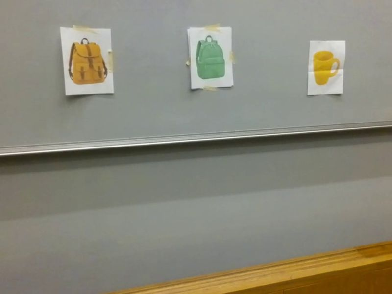

Capstone · RoboMaster TT · updated November 13, 2026
Name an object. The drone finds its picture and stops in front of it.
objectPilot flies a RoboMaster TT to a printed picture on a wall and stops square in front of it, 0.50 m away. The laptop runs YOLO11s on the drone's video, reads the forward ToF sensor, and after every hover chooses one SDK move.
- RoboMaster TT
- YOLO11s at 960 px
- Forward ToF, 1.2 m
- Stop-and-go SDK steps
- Wall-normal sweep
- Takes off facing away; searches in 30° turns until it sees the cup.
- Turns to it and steps in 40 + 20 cm.
- Sweeps 10° at a time, twice (the first sweep had too few readings). The lowest ToF reading is the wall's normal.
- Turns square, strafes left 21, 24 and 24 cm, then centers on the cup.
- Steps in to 0.50 m and holds: 27 commands, 87 s.
Where we are
Calibration flight commands answered
72 / 72
November 13 · step response measured on the TT
Planner approach flights that arrived
2 of 4
November 13 · first planner version
Changed planner, simulated success
96.3%
300 starts with flight-measured step errors
Small corrections per approach
19 → 7
median, before → after the fixes (simulation)
Next →The changed planner has not flown yet. Next flights: 1.5 m straight in, 1.8 m at 30° to the side, then a search among distractor prints.
Hover, look, take one step.
We dropped continuous rc streaming for discrete SDK moves. The drone is always still when it is measured, so a command's effect on the picture is geometry, not latency or braking.
- 1 · Observe
6 video frames through YOLO11s, 6 forward ToF replies, and the yaw from the state stream.
- 2 · Decide
The step planner picks one command for its current phase.
- 3 · Act
One SDK step: move 20–100 cm forward, back, left, right, up or down, or turn 1–90°.
- 4 · Settle
Wait for the reply, pause 0.5 s, and look again. About 3 s per step.
The planner is objectpilot.stepwise; objectpilot.step_approach runs it on the aircraft or in the test world with the same code.
- SearchTurn 30° at a time. A weak detection is turned to the image center and must reach 0.45 confidence.
- FaceYaw the box to the center, then step forward 50, 40, 25 or 20 cm by box size until ToF reads 1.1 m or less.
- SweepBelow 1.1 m, turn in 10° steps over ±20° around the lowest ToF reading and fit the wall's normal.
- Square upTurn to the normal and strafe D·tan(angle) so the drone stands in front of the picture.
- CenterStrafe by the box offset; only from 0.70 m or farther, backing off first if needed.
- Stand offStep to 0.50 m by ToF and hold for three hovers. Moves under 20 cm go out and back.
One range sensor finds the wall's normal
The forward ToF reads D / cos(angle): the reading is lowest when the drone faces the wall square.
- Flight reading, median of 6
- Fit D / cos(heading − normal)
Show the readings
| Heading | ToF |
|---|---|
| +0° | 0.762 m |
| +7° | 0.776 m |
| +15° | 0.787 m |
| +23° | 0.797 m |
| +32° | 0.895 m |
| +23° | 0.841 m |
| +13° | 0.779 m |
| +5° | 0.764 m |
| -2° | 0.734 m |
| -10° | 0.762 m |
| -18° | 0.801 m |
| -27° | 0.837 m |
| -35° | 0.906 m |
| -27° | 0.827 m |
| -19° | 0.800 m |
| -10° | 0.778 m |
| -2° | 0.764 m |
Every command passes three checks
Allowlist. Only SDK steps of 20–100 cm, turns up to 90°, takeoff, land and stop. No rc, go, flip or emergency.
Planner. Backs off below 0.40 m. A forward step must stay 3 cm clear of the 0.35 m minimum even if it overshoots by 30%. No strafing closer than 0.70 m.
Flight layer. Lands below 0.32 m, below 25% battery, on a stale state stream, on height out of bounds, on repeated errors, or after 4 minutes.
Operator. Types fly after a checklist; Ctrl+C stops and lands. If the laptop dies, the TT lands by itself 15 s after its last command.
What the real drone did.
Everything below happened on the delivered TT on November 13, 2026, in one room with the cup print on a whiteboard.
Step calibration flight: assumed vs measured
One supervised flight sent 72 single steps in opposite pairs and logged the box, ToF and yaw before and after each. Its numbers now drive the test world.
| Quantity | Assumed before | Measured in flight |
|---|---|---|
| Move length | exact ± 8% | 8.7% short ± 10.6% |
| Turn angle | exact ± 1° | 2.0° short ± 1.0° |
| Heading change per move | 1° | 0.37° |
| ToF scatter between hovers | about 2 mm | 1.3 cm |
| ToF at an angle | reads long (bench) | matches D / cos within ±30° |
| Video field of view | 54° | 54.2° |
| Error replies | 2% | 0 of 72 |
| Box response to each command | left → box right, cw → box left, up → box down | ✓All as assumed |
Planner approach flights
The first planner version: 0.65 m stand-off, 40° search turns, YOLO at 640 px.
| Start | Result | What happened |
|---|---|---|
| 1.5 m straight in front, facing the print | ✓Arrived | 38 s, 13 commands: face, sweep, one 38 cm strafe, one step in, 0.66 m. (The first try was refused at takeoff: error, high temp.) |
| 1.8 m from the print, 30° off its normal | !Arrived, over-corrected | 76 s, 25 commands; 17 were small centering and distance corrections. |
| 1.8 m in front, turned away, distractor prints on the wall | ‖Landed on battery | Found the cup after two search turns and squared up; landed at 25% battery (51% at takeoff). |
| Same, three backpack prints beside the cup | ✕Not found | Searched the full 360° and missed the cup: see below. |

Why the search missed a cup it could see
With 40° turns the cup sat between two views, at the frame edge in both. YOLO11s detected it each time, but below the 0.45 threshold. The turns were not too fast: every look happens after the drone has stopped, and the six frames of each look agree.
| View | At 640 px (as flown) | At 960 px |
|---|---|---|
| yaw 77°, cup at right edge | 0.43, 0.16 | 0.36, 0.39 |
| yaw 115°, cup at left edge | 0.19, 0.20 | 0.60, 0.54 |
Fix: 30° turns, so the cup is always within 15° of some view's center; YOLO at the stream's 960 px width; and any box above 0.25 becomes a candidate that is turned to the center and must reach 0.45.
Why it over-corrected, and what changed.
The test world had been too clean to show the problem. With the flight's measured step errors added, it reproduced the dithering, and we could fix it before flying again.
A re-check inside the noise
At 0.65 m a ±10° ToF re-check changes the reading by about 1 cm, the same as the scatter between hovers. It turned the drone 8° off square, so every strafe also changed the wall distance.
Tolerance equal to step precision
A 7 cm correction is right 27 then left 20; with about 10% error per leg it nets 7 ± 4 cm. A hold at 0.70 m drifted out by one reading and the corrections restarted.
A world without the drone's habits
Moves 9% short, turns 2° short and 1.3 cm ToF scatter were missing. With them, the old planner needs 18 small corrections per approach in simulation (flight: 17).
- Wider sweep, no re-check: fit the normal over ±20°; the ±10° re-check at the stand-off is off.
- Hysteresis: once holding, tolerances widen by 1.4×; after three small corrections on an axis, by 1.5×.
- Learns the drone: measures the turn and move shortfall in flight from yaw and ToF, and compensates.
- Safer near the wall: no strafe inside 0.70 m; forward steps sized so a 30% overshoot stays clear.
- Closer stand-off: 0.50 m, minimum 0.35 m. Takeoff now needs 40% battery.
Old vs changed planner, same 300 simulated starts
Full flight loop with the measured step errors: 1.5–3.2 m from the print, up to 50° off its normal, 40% starting turned away.
- Before (as flown November 13)
- After (changed planner)
Show the numbers
| Stand-off | Success before | Success after | Corrections before | Corrections after |
|---|---|---|---|---|
| 0.65 m stand-off | 74.7% | 93.7% | 18 | 6 |
| 0.50 m stand-off | 71.0% | 96.3% | 19 | 7 |
From a simulator to a drone in the air.
Dates in 2026. Course deadlines are fixed; flight work is planned week by week.
- Oct 29
Rapid prototypes
Dry-run vision-to-command pipeline, PID and PPO in a simulator, ESP32 range firmware prepared.
- Oct 31
Simulator controllers tuned
PID tuned and three PPO seeds compared on 100 simulated validation scenarios.
- Nov 5–7
The TT arrives and gets measured
Camera stand tests: YOLO11s detects the cup print from 0.5 to 3 m; the backpack print fails and is dropped. ToF bench: about 2 cm long, no reply beyond 1.2 m. Two manual flights recorded.
- Nov 8
New direction: stop-and-go steps
Discrete SDK moves and a ToF wall-normal sweep replace streaming control. In the test world, squaring up arrives 95% of the time vs 15% for yaw-only.
- Nov 13
Calibration flight
72 of 72 step commands; measured move, turn and ToF behavior on the real aircraft.
- Nov 13
First planner approaches, then fixes
2 of 4 approaches arrived. Over-correction and the missed search fixed; 96.3% in simulation with flight noise.
- Next
Fly the changed planner
Straight in, 30° to the side, then a search with distractors. Screen the bottle print and a replacement third print.
- Then
Say the word
Pick the target by voice on the laptop microphone, from a fixed word list.
- Dec 3
Feature freeze
Pick the most reliable configuration and keep its logs and settings.
- Dec 10 · 15
Final demo, then report
Demo on December 10; final report and peer review due December 15.
What we still have to measure.
The test world still assumes these. Each one is a short session.
- 1Fly the changed planner
The three starts above, with the flight height set to print center + 9 cm and at least 55% battery (it drops about 0.5% per second when low).
- 2Bottle and third print on the stand
0.65 to 3 m straight on, as for the cup. The backpack print failed with every pretrained model and needs a replacement picture.
- 3Detection against viewing angle
Each print at 1.5 and 2.5 m, from 0 to 65° off its normal. This decides how oblique a start can be.
- 4All three prints together
At demo spacing, to check that YOLO never mistakes one for another.
- 5Command words
Each word spoken about ten times on the laptop microphone with the propellers running.
Earlier work stays readable.
These pages describe the October streaming-control design: PID and PPO on a 64-value observation. The step planner has replaced its control parts; the history is kept on purpose.